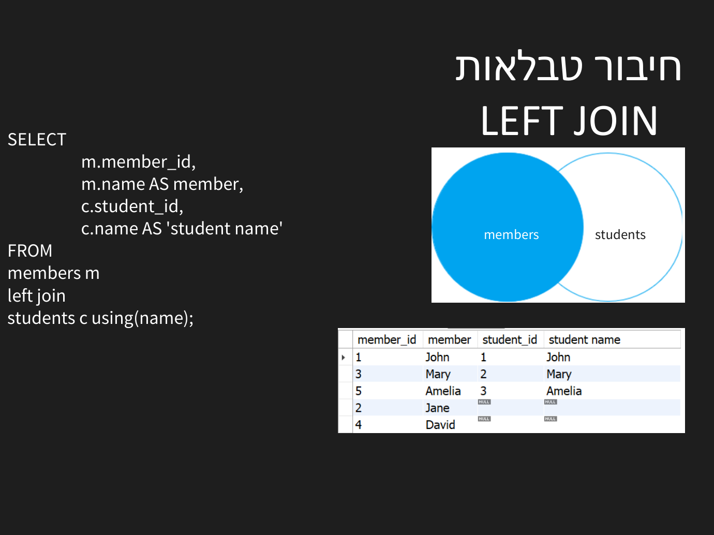
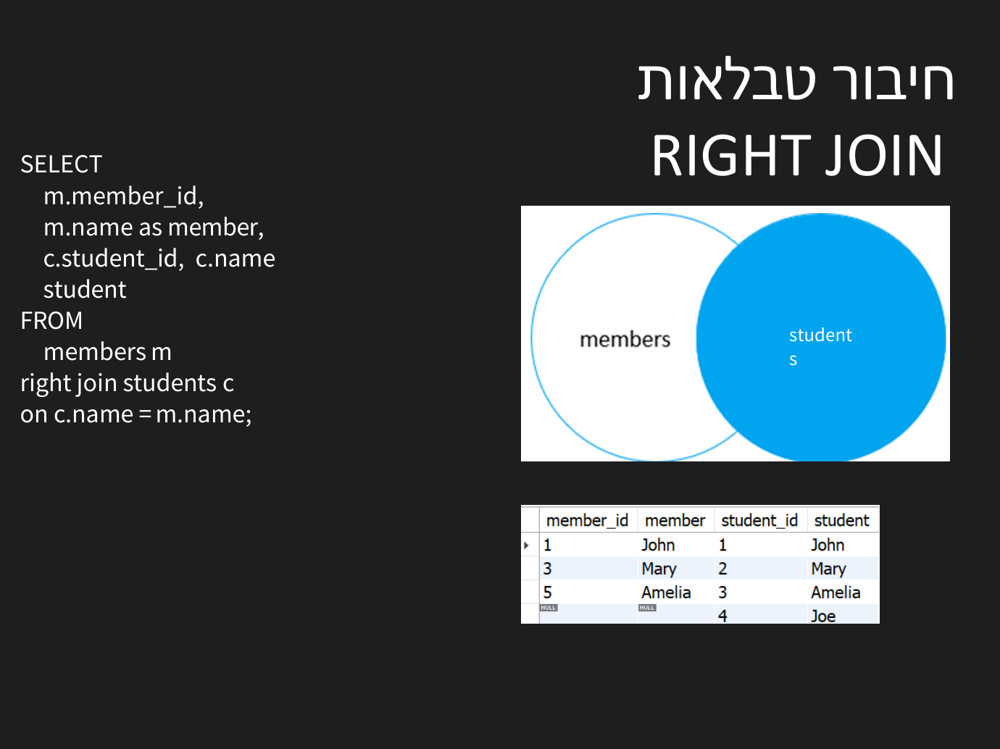

JOINs — חיבור טבלאות
⏱ זמן משוער: 45 דק'
למה JOIN?
נתונים מפוזרים בטבלאות מנורמלות; JOIN מחבר שורות מטבלאות שונות לפי תנאי (בדרך כלל מפתח זר = מפתח ראשי).
SELECT e.first_name, d.dept_name
FROM employee e
INNER JOIN department d ON e.dept_id = d.dept_id;מקור: sql_intro_joins.pdf
ארבעת סוגי ה-JOIN
בקורס נלמדים ארבעה סוגי חיבור:
- INNER JOIN — רק זוגות תואמים משתי הטבלאות.
- LEFT JOIN — כל שורות הטבלה השמאלית + התאמות; אין התאמה → NULL בצד ימין.
- RIGHT JOIN — סימטרי, כל שורות הטבלה הימנית.
- CROSS JOIN — מכפלה קרטזית (כל שילוב); לטבלאות בגודל N ו-M מתקבלות N·M שורות.
אותה שאילתה בדיוק, ארבע תוצאות שונות — על הנתונים האלה:
-- תבנית כללית:
-- SELECT columns
-- FROM table1 [INNER|LEFT|RIGHT|CROSS] JOIN table2 ON join_condition;
-- department: -- employee:
-- dept_id | dept_name -- emp_id | first_name | dept_id
-- 10 | R&D -- 1 | Dana | 10
-- 20 | HR -- 2 | Avi | 10
-- 30 | Finance -- 3 | Noa | NULL
SELECT e.first_name, d.dept_name
FROM employee e INNER JOIN department d ON e.dept_id = d.dept_id;
-- תוצאה — רק זוגות תואמים (2 שורות):
-- Dana | R&D
-- Avi | R&D
SELECT e.first_name, d.dept_name
FROM employee e LEFT JOIN department d ON e.dept_id = d.dept_id;
-- תוצאה — כל העובדים, גם ללא מחלקה (3 שורות):
-- Dana | R&D
-- Avi | R&D
-- Noa | NULL
SELECT e.first_name, d.dept_name
FROM employee e RIGHT JOIN department d ON e.dept_id = d.dept_id;
-- תוצאה — כל המחלקות, גם ללא עובדים (4 שורות):
-- Dana | R&D
-- Avi | R&D
-- NULL | HR
-- NULL | Finance
SELECT COUNT(*) FROM employee CROSS JOIN department;
-- תוצאה: 9 (3 עובדים × 3 מחלקות — כל שילוב)
-- מהמצגת: CROSS JOIN עם WHERE מתנהג בדיוק כמו INNER JOIN --
SELECT * FROM employee e CROSS JOIN department d
WHERE e.dept_id = d.dept_id; -- שקול ל-INNER עם ONוכך זה נראה במצגת של המרצה — שאילתות אמיתיות עם טבלאות התוצאה שלהן:


USING — קיצור ל-ON כשעמודת החיבור נקראת אותו שם בשתי הטבלאות (מופיע כך במצגת של המרצה):
SELECT e.first_name, d.dept_name
FROM employee e JOIN department d USING (dept_id);
-- שקול ל: ON e.dept_id = d.dept_id
-- עובד עם כל סוגי ה-JOIN:
SELECT m.name AS member, s.name AS student
FROM members m LEFT JOIN students s USING (name);מקור: sql_intro_joins.pdf
חיפוש שורות ללא התאמה (LEFT JOIN + IS NULL)
דפוס שימושי שנלמד: LEFT JOIN ואז WHERE <צד ימין> IS NULL מחזיר בדיוק את השורות השמאליות שאין להן התאמה — למשל לקוחות שלא ביצעו השאלה:
SELECT c.first_name, c.last_name
FROM customer c
LEFT JOIN rental r ON c.customer_id = r.customer_id
WHERE r.customer_id IS NULL;אותו דפוס בדיוק עובד גם בכיוון ההפוך — RIGHT JOIN ואז IS NULL על עמודת הצד השמאלי (במצגת: סטודנטים שאינם members):
SELECT c.student_id, c.name
FROM members m RIGHT JOIN students c USING (name)
WHERE m.member_id IS NULL;מקור: sql_intro_joins.pdf
Self-join (הרחבה)
מקור: join_examples.sql
איחוד תוצאות של שאילתות (מהדף-עזר של המרצה)
בנוסף ל-JOIN (חיבור «לרוחב» — עמודות מטבלאות שונות), הדף-עזר הרשמי של הקורס מציג גם חיבור «לגובה» — שורות של שתי שאילתות זו מעל זו. התנאי: אותו מספר עמודות וטיפוסים תואמים בשתי השאילתות:
SELECT city FROM employee
UNION
SELECT city FROM suppliers; -- איחוד בלי כפילויות
-- UNION ALL — איחוד ששומר גם כפילויות
-- INTERSECT — רק שורות שמופיעות בשתי התוצאות
-- MINUS — שורות הראשונה שאינן בשנייהמקור: SQL-cheat-sheet.pdf
מלכודות נפוצות
ההבדל בין תנאי ב-ON לתנאי ב-WHERE, על אותם נתונים מלמעלה:
SELECT e.first_name, d.dept_name
FROM employee e
LEFT JOIN department d
ON e.dept_id = d.dept_id AND d.dept_name = 'R&D';
-- התנאי ב-ON: ה-LEFT נשמר — כל העובדים נשארים (3 שורות):
-- Dana | R&D
-- Avi | R&D
-- Noa | NULL
SELECT e.first_name, d.dept_name
FROM employee e
LEFT JOIN department d ON e.dept_id = d.dept_id
WHERE d.dept_name = 'R&D';
-- התנאי ב-WHERE: שורות ה-NULL מסוננות אחרי החיבור —
-- בפועל התקבל INNER JOIN (2 שורות):
-- Dana | R&D
-- Avi | R&Dמקור: sql_intro_joins.pdf
בדיקה עצמית
איזה JOIN יחזיר גם מחלקות שאין בהן עובדים?
מה קורה ב-SELECT * FROM a JOIN b; ללא ON (ב-MySQL)?
לחיבור עובד לשם המנהל שלו (מאותה טבלה) משתמשים ב:
בהחלפת INNER JOIN ב-LEFT JOIN, מספר השורות:
מה תפקיד תנאי ה-ON ב-JOIN?
🧪 מעבדת SQL — תרגול חי
כתבו SQL אמיתי והריצו אותו כאן, ישירות בדפדפן. ▶ הרצה מציגה את התוצאה שלכם; בדיקה מול פתרון משווה אותה לתוצאת הפתרון הרשמי.
המנוע (SQLite ב-WebAssembly) רץ כולו בדפדפן ותואם ל-MySQL בכל מה שנלמד בקורס — AUTO_INCREMENT, DESCRIBE ו-TRUNCATE מתורגמים אוטומטית. כל הרצה מתחילה ממסד נקי, אז אי-אפשר לקלקל כלום.
🧪 משימה: הציגו שם עובד + שם מחלקה, רק לעובדים שיש להם מחלקה (הנתונים זהים לדוגמת הפרק).
SELECT e.first_name, d.dept_name
FROM employee e
INNER JOIN department d ON e.dept_id = d.dept_id;🧪 משימה: הציגו את כל העובדים עם שם המחלקה — כולל עובדים ללא מחלקה (שיקבלו NULL).
SELECT e.first_name, d.dept_name
FROM employee e
LEFT JOIN department d ON e.dept_id = d.dept_id;🧪 משימה: מצאו את שמות המחלקות שאין בהן אף עובד — בעזרת LEFT JOIN ו-IS NULL.
SELECT d.dept_name
FROM department d
LEFT JOIN employee e ON d.dept_id = e.dept_id
WHERE e.emp_id IS NULL;סיימתם את הפרק? סמנו אותו כהושלם: